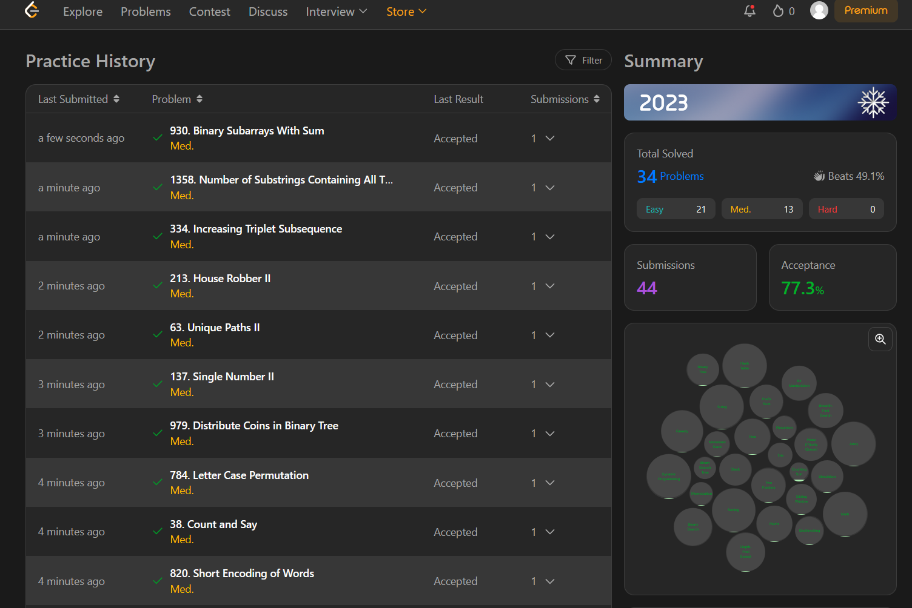
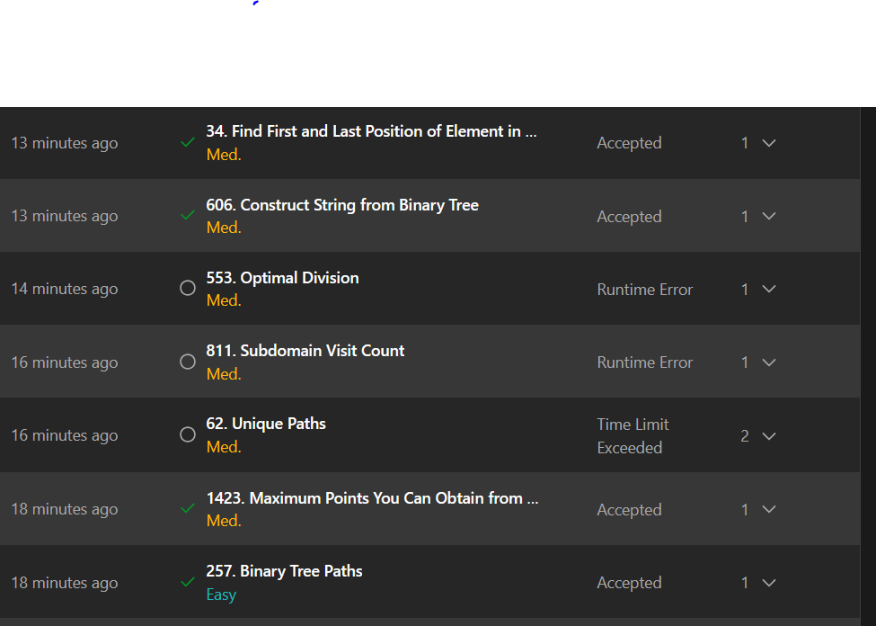

ITMO ICT Web Development Tools 2024-2025
Добро пожаловать в документацию по курсу "Инструменты веб-разработки" ИТМО!
О курсе
Этот курс посвящен изучению современных инструментов и технологий веб-разработки, включая:
- FastAPI - современный веб-фреймворк для Python
- SQLModel - библиотека для работы с базами данных
- Alembic - система миграций для баз данных
- Асинхронное программирование - threading, multiprocessing, asyncio
- Парсинг веб-страниц - различные подходы к извлечению данных
- LeetCode - решение алгоритмических задач
Лабораторные работы
Лабораторная работа 1
Тема: Основы FastAPI и работа с базами данных
- Практика 1: Создание REST API с FastAPI и Pydantic
- Практика 2: Интеграция с базой данных через SQLModel
- Практика 3: Система миграций с Alembic
- Веб-приложение: Полноценное приложение для обмена книгами
Лабораторная работа 2
Тема: Многопоточность и асинхронное программирование
- Парсинг веб-страниц: Сравнение подходов (threading, multiprocessing, asyncio)
- Подсчет суммы: Демонстрация параллельных вычислений
Лабораторная работа 3
Тема: Продвинутое веб-приложение
- Веб-приложение: Расширенное приложение с дополнительным функционалом
LeetCode


Быстрый старт
Установка зависимостей
# Для каждой лабораторной работы
cd lr-1/ht-web
pip install -r requirements.txt
# Для lr-2
cd lr-2
pip install -r requirements.txt
# Для lr-3
cd lr-3/ht-web
pip install -r requirements.txt
Запуск приложений
# FastAPI приложение
uvicorn app.main:app --reload
# Парсеры
python parsing/async_parser.py
python parsing/threading_parser.py
python parsing/multiprocessing_parser.py
Структура проекта
ITMO_ICT_WebDevelopment_tools_2024-2025/
├── lr-1/ # Лабораторная работа 1
│ ├── practice_1/ # FastAPI + Pydantic
│ ├── practice_2/ # SQLModel + База данных
│ ├── practice_3/ # Alembic миграции
│ └── ht-web/ # Веб-приложение
├── lr-2/ # Лабораторная работа 2
│ ├── parsing/ # Парсинг веб-страниц
│ └── sum_count/ # Подсчет суммы
├── lr-3/ # Лабораторная работа 3
│ └── ht-web/ # Расширенное веб-приложение
└── docs/ # Документация
└── leetcode.md # Решения LeetCode
Технологии
- Python 3.8+
- FastAPI - веб-фреймворк
- SQLModel - ORM для работы с БД
- PostgreSQL - база данных
- Alembic - миграции
- aiohttp - асинхронные HTTP запросы
- BeautifulSoup - парсинг HTML
- asyncio - асинхронное программирование